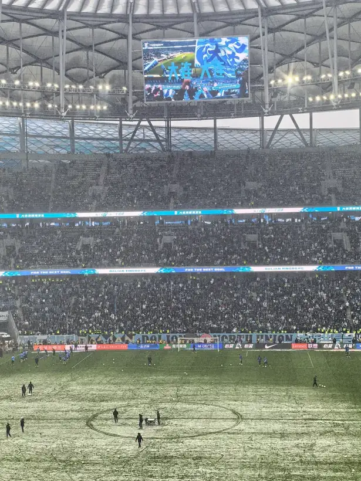
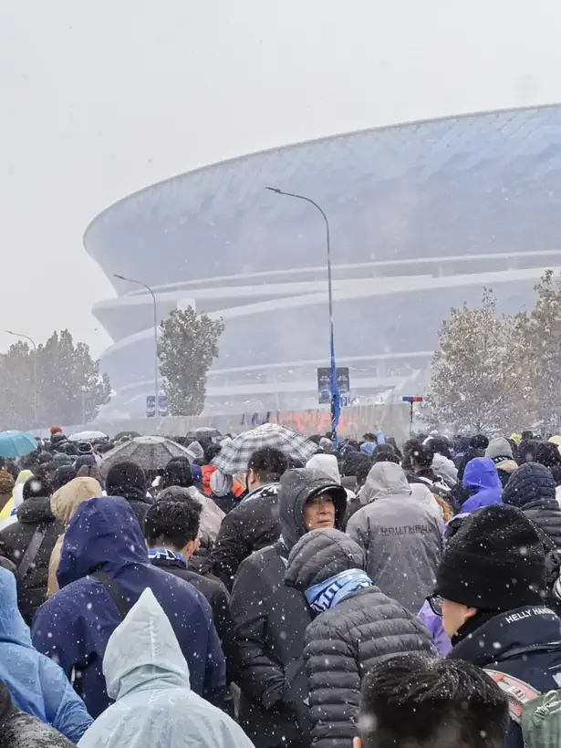
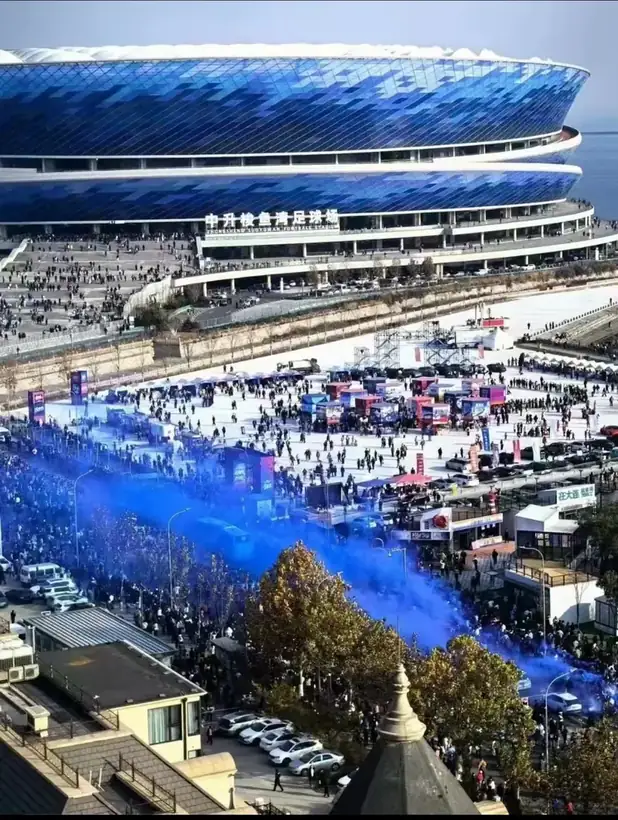
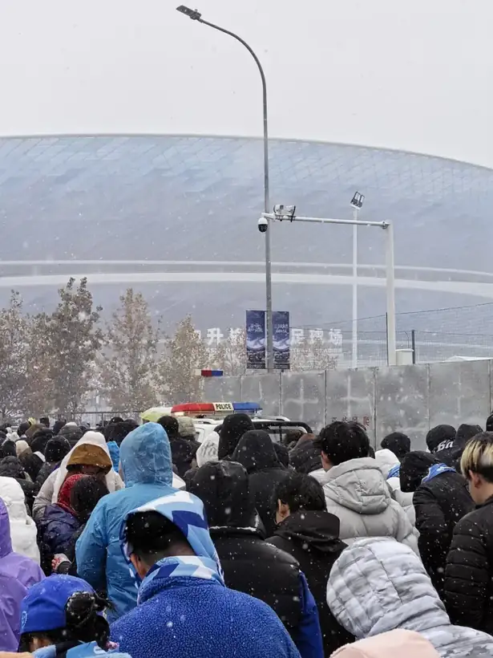
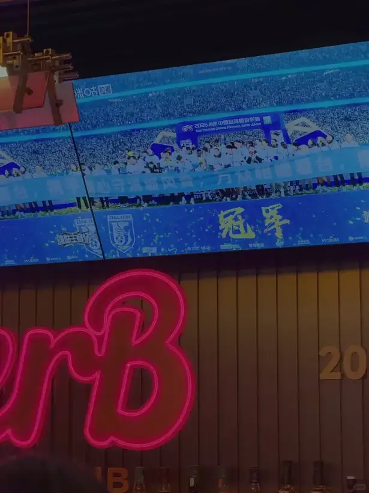

奇迹有名字 那个名字叫大连
第 16 轮结束时，他们还落后榜首 18 分。
最后 5 轮，他们全胜，追回 14 分。
终场哨响，两队同积 52 分——大连英博凭借相互战绩，把火神杯留在了这座足球城。
一个赛季，六个数字
这是中超 30 轮主客场制下历史第二低的冠军积分——仅比 2009 年北京国安的 51 分高 1 分。全赛季输掉 10 场，他们依然登顶。
与成都蓉城的 30 轮积分变化
蓝线是大连英博，红线是成都蓉城。上半程蓉城一骑绝尘，第 16 轮领先 18 分；从第 26 轮起，两条线开始朝相反的方向跑。
一个赛季的高光时刻
从开局两连败，到雪夜加冕。每一场都算数。
卡片配图来自 2026 赛季各轮次现场。
五连胜起点
阿奇姆彭 7′
斯坦丘 8′
马马杜 66′
雪夜加冕
收官之夜
2026 年 11 月 8 日，梭鱼湾。大连今冬第一场雪从早下到半夜，62,619 人把这里坐成了队史纪录。以下为本赛季收官战与夺冠现场的真实影像。
球迷的付出
这个冠军有一半是他们踢的。15 个主场，922,733 人次；收官战那天，六万三千个坐席开票即抢空，抢不到票的人把整座城市变成了看台。

梭鱼湾的蓝色，是这个赛季最稳的第十一人
场均 61,516 人，连续两个赛季位居中超第一。相比 2025 赛季，总人次增加 48,713 人，涨幅 5.57%。
万里归途，只为这一场
11 月 8 日一早，大连飘起雪花。有球迷从美国西雅图飞回，也有从法国、英国、加拿大、墨西哥、日本赶回来的，甚至有人从智利辗转 30 个小时落地。他们大多抢不到票，只是想和这座城市站在一起。
满城皆是第二现场
从梭鱼湾到胜利广场，从东关街到北京街，一块块屏幕亮起，直播着同一场比赛。胜利广场的两块大屏，一块播大连主场，一块播山东主场；工作人员不断分发取暖贴。青砖灰瓦的老街下，人们打着伞仰着头，喊哑了嗓子。
一座城市的共情
北京街一家餐饮连锁店早早贴出通知：如果大连英博夺冠，全场免单。店主说这不是促销——「大家不是为了吃口免费烧烤，是为了城市荣誉共情」。终场哨响，素不相识的陌生人举杯相碰。




感谢
这个冠军不是一支球队的功劳。感谢每一位球员、每一位球迷，也感谢四支在最后五轮里，用自己的方式改变了积分榜的队伍。
感谢每一位球员
THE SQUAD感谢四支在最后五轮出手的人
THE HELPERS感谢球迷
15 个主场，场场超 5 万；11 月 8 日的初雪里，六万三千个坐席开票即空。你们跟着球队走过一个又一个客场，也在落后 18 分的时候没有散场，在最后一个主场没有提前退场。
足球城的底蕴不是一句空话——它是 922,733 人次一步一步走出来的。
廿一年
2005 年，大连实德最后一次捧起中国顶级联赛冠军。此后金州的灯光暗下去，2014 年大连阿尔滨降级，2024 年大连人告别职业联赛。二十一年，足够让一代人从少年变成中年。
奇迹有名字
那个名字叫大连
2026 赛季中国足球协会超级联赛 · 冠军 大连英博
16 胜 4 平 10 负 · 52 分 · 队史首座中超冠军
上一次大连站上中国顶级联赛之巅，是 2005 年的大连实德